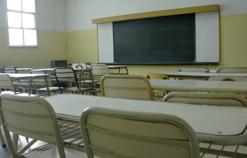

Real Chubut - Agencia de Noticias


El "lado b" de la falta de clases: alta demanda en privados, clases particulares y cambios en la rutina familiar

Este lunes comenzará la 11ª semana del conflicto docente por el pago escalonado de sueldos. Ante la falta de clases las madres buscan opciones para sus hijos, desde el cambio a una escuela privada o la contratación de una maestra particular. La organización también tiene su lugar en el conflicto e incluso aparecieron opciones con un carácter social para tratar de ayudar a quienes no tienen nada que ver con el sucedido entre el Gobierno y ATECh: los chicos.
Desde el lunes 22 de julio cuando los docentes de Chubut comenzaron las medidas de fuerza por el pago escalonado de sueldos, la suspensión de la prestación de la obra social SEROS y el incumplimiento de lo acordado en paritarias, los estudiantes de Comodoro Rivadavia y gran parte de la provincia no tienen clases de forma continua.
Este lunes se cumplirán 11 semanas del inicio del reclamo y muchas aulas todavía están vacías.
Desde el Gobierno provincial ya anunciaron que el ciclo lectivo se extenderá hasta el 19 de diciembre, y que incluirá recupero de clases los sábados.
Desde el sector de ATECh cuestionaron esta decisión, principalmente porque se desconoce cuándo se volverá a las aulas y si están dadas las condiciones estructurales para que toda la masa estudiantil acuda un sábado a clases.
Los padres mientras tanto, más allá de su posición respecto al reclamo docente, solo quieren que los chicos vuelvan a clases, recuperen su cotidianidad, continúen con el proceso pedagógico que implica estudiar y no pierdan el año, el gran temor cuando comienza octubre.
Para ellos todas las opciones son válidas al momento de pensar en el estudio de sus hijos. Desde el cambio a una escuela privada con el costo que ello implica, la contratación de una maestra particular, la organización grupal con otros padres y hasta la asistencia a espacios donde puedan ayudarle con el aprendizaje.
SIN VACANTES
Según pudo confirmar ADNSUR, por estos días en Comodoro hay largas listas de espera para poder ingresar a un instituto privado, donde las cuotas van desde los 5 mil hasta los 20 mil pesos.
Al igual que en el Instituto Martín Rivadavia, el Complejo Educativo Everardo y el Da Vinci en otros colegios hubo ingreso de alumnos, algo poco habitual para esta época del año, principalmente también por la gran demanda que obligó a abrir listas de espera.
Rafael Federico, representante del Instituto Da Vinci, dialogó con ADNSUR y aseguró que los últimos días fueron totalmente atípicos a lo que sucede cada año. "Lo que trabajamos en estos últimos treinta días es lo que trabajamos entre octubre y noviembre y principio de marzo en un ciclo escolar normal. Es desesperante la situación, ahora porque no podemos dar más respuestas; hay listas de espera en todas las instituciones educativas, las esperas son largas y lamentablemente ya no podemos dar más lugar", explicó.
Federico confirmó que en ese establecimiento "hay lista de espera de 10 o 15 chicos por curso, cuando antes tenías lista de espera en febrero pero de primer grado o segundo grado o primer año o segundo año. Ahora tenés hasta en los últimos años de secundaria cuando antes no entraba nadie, no había matricula".
Por la continuidad del conflicto cada día que pasa hay más consultas sobre inscripciones, no solo para este año sino también para el próximo ante el temor de cómo será el ciclo lectivo en 2020. Es que como dice Federico "nadie quiere pasar por lo mismo".
El caso del Da Vinci es un reflejo de lo que sucede por estos días en Comodoro Rivadavia. Solo en estos últimos meses ya recibió entre 40 y 50 chicos nuevos, más de un aula completa.
PERMANECER EN LO PÚBLICO
Ingresar a un privado es una elección de vida. No solo por renunciar a la escuela pública que muchos quieren sostener y darle valor sino también porque implica un alto costo que impacta directamente al bolsillo.
Eduardo lo sabe bien. Es padre de una nena de 9 años y el año pasado cuando también hubo un largo periodo sin clases, producto de un reclamo docente al gobierno, decidió sacar a su hija de la Escuela 34 y mandarla a un privado con todo el esfuerzo que ello implicó y el cambio que significó para la nena.
La menor terminó el ciclo lectivo en forma exitosa. Sin embargo, este año la matricula aumentó desproporcionalmente y Eduardo decidió que su hija vuelta a la escuela pública.
APRENDER EN LA CASA
Lucia también forma parte de ese grupo de padres que defiende la escuela pública y la quiere para sus hijos. Por esa razón se resiste a que su hijo, que asiste a primer grado, vaya a una escuela privada, aunque con la extensión del conflicto lo pensó también como alternativa.
"Yo averigüe, quiero que siga en la escuela 12, pero averigüe para ver que opciones hay y no hay cupo en ninguna escuela", contó este medio.
En su caso, cuando se inició el reclamo tras el receso invernal Lucia junto a un grupo de madres apeló a los servicios de una maestra particular. Primero los chicos se reunían tres veces a la semana en la casa de alguna familia. Sin embargo, en el último tiempo comenzaron hacerlo de lunes a viernes.
Según contó, así como aumentó la cantidad de días también se incrementó la cantidad de inscriptos. Sin embargo, ella sabe que no es lo mismo una maestra particular que "tener el contacto con su seño, sus compañeros".
Conociendo este contexto, en los últimos días, la Biblioteca Popular Antoine de Saint Exupery de Prospero Palazzo, lanzó una convocatoria a la comunidad para que los chicos asistan a clases de apoyo de nivel primario. La respuesta fue inmediata y se completaron todos los cupos.
Brenda Cotognini, coordinador de la actividad, explicó que la iniciativa surgió recientemente en una reunión, en el marco de la reapertura de la entidad y para ayudar a los chicos que necesitan apoyo escolar pero no pueden costear una profesora particular.
De esa forma, la entidad contrató una docente que le enseñará a 10 chicos, lo que puede costear hoy en día la biblioteca. "Es lo que está al alcance del fondo de la biblioteca, pero hubo muchos interesados. Mucha gente se acercó a la biblioteca y los cupos se cubrieron el primer día. Hay mucha gente que no puede pagar una maestra particular y acá solo pagás la cuota de socio que son 50 pesos, y ya podes acceder", detalló.
Federico asegura que estas prácticas son buenas. Sin embargo, admite que nada reemplaza al calendario escolar. "Hay chicos que ya llevan tres meses de paro pero hay un proceso educativo y pedagógico que tienen que hacer. Hay madres que contratan profesores particulares pero hay un proceso académico que no se puede suplir por más que vos digas van a ir los sábados, vamos a hacer un plan de recuperación. El chico necesita estar en la escuela, compartir, vivir el recreo, que la maestra la corrija. Es todo un proceso que no se va a poder suplir", explicó, en torno a este conflicto que por el momento parece continuar.
Fuente: ADN Sur
PUBLICIDAD